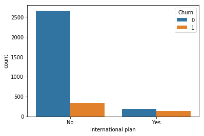
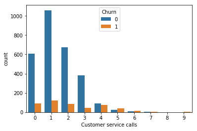
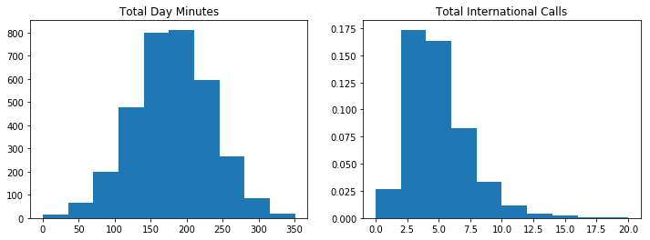
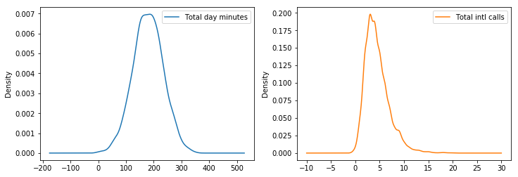

Exploring the Data Challenge#
Today, we will work to explore a new dataset using our earlier EDA strategies. We will also discuss presentation graphics, and customizations with matplotlib. To begin, let’s explore the Custome Churn dataset.
Customer Churn#
%matplotlib inline
import matplotlib.pyplot as plt
import numpy as np
import pandas as pd
import seaborn as sns
#load the data
telecom = pd.read_csv('data/telecom_churn.csv')
---------------------------------------------------------------------------
FileNotFoundError Traceback (most recent call last)
Cell In[2], line 2
1 #load the data
----> 2 telecom = pd.read_csv('data/telecom_churn.csv')
File /Library/Frameworks/Python.framework/Versions/3.12/lib/python3.12/site-packages/pandas/io/parsers/readers.py:1026, in read_csv(filepath_or_buffer, sep, delimiter, header, names, index_col, usecols, dtype, engine, converters, true_values, false_values, skipinitialspace, skiprows, skipfooter, nrows, na_values, keep_default_na, na_filter, verbose, skip_blank_lines, parse_dates, infer_datetime_format, keep_date_col, date_parser, date_format, dayfirst, cache_dates, iterator, chunksize, compression, thousands, decimal, lineterminator, quotechar, quoting, doublequote, escapechar, comment, encoding, encoding_errors, dialect, on_bad_lines, delim_whitespace, low_memory, memory_map, float_precision, storage_options, dtype_backend)
1013 kwds_defaults = _refine_defaults_read(
1014 dialect,
1015 delimiter,
(...)
1022 dtype_backend=dtype_backend,
1023 )
1024 kwds.update(kwds_defaults)
-> 1026 return _read(filepath_or_buffer, kwds)
File /Library/Frameworks/Python.framework/Versions/3.12/lib/python3.12/site-packages/pandas/io/parsers/readers.py:620, in _read(filepath_or_buffer, kwds)
617 _validate_names(kwds.get("names", None))
619 # Create the parser.
--> 620 parser = TextFileReader(filepath_or_buffer, **kwds)
622 if chunksize or iterator:
623 return parser
File /Library/Frameworks/Python.framework/Versions/3.12/lib/python3.12/site-packages/pandas/io/parsers/readers.py:1620, in TextFileReader.__init__(self, f, engine, **kwds)
1617 self.options["has_index_names"] = kwds["has_index_names"]
1619 self.handles: IOHandles | None = None
-> 1620 self._engine = self._make_engine(f, self.engine)
File /Library/Frameworks/Python.framework/Versions/3.12/lib/python3.12/site-packages/pandas/io/parsers/readers.py:1880, in TextFileReader._make_engine(self, f, engine)
1878 if "b" not in mode:
1879 mode += "b"
-> 1880 self.handles = get_handle(
1881 f,
1882 mode,
1883 encoding=self.options.get("encoding", None),
1884 compression=self.options.get("compression", None),
1885 memory_map=self.options.get("memory_map", False),
1886 is_text=is_text,
1887 errors=self.options.get("encoding_errors", "strict"),
1888 storage_options=self.options.get("storage_options", None),
1889 )
1890 assert self.handles is not None
1891 f = self.handles.handle
File /Library/Frameworks/Python.framework/Versions/3.12/lib/python3.12/site-packages/pandas/io/common.py:873, in get_handle(path_or_buf, mode, encoding, compression, memory_map, is_text, errors, storage_options)
868 elif isinstance(handle, str):
869 # Check whether the filename is to be opened in binary mode.
870 # Binary mode does not support 'encoding' and 'newline'.
871 if ioargs.encoding and "b" not in ioargs.mode:
872 # Encoding
--> 873 handle = open(
874 handle,
875 ioargs.mode,
876 encoding=ioargs.encoding,
877 errors=errors,
878 newline="",
879 )
880 else:
881 # Binary mode
882 handle = open(handle, ioargs.mode)
FileNotFoundError: [Errno 2] No such file or directory: 'data/telecom_churn.csv'
telecom.info()
<class 'pandas.core.frame.DataFrame'>
RangeIndex: 3333 entries, 0 to 3332
Data columns (total 20 columns):
State 3333 non-null object
Account length 3333 non-null int64
Area code 3333 non-null int64
International plan 3333 non-null object
Voice mail plan 3333 non-null object
Number vmail messages 3333 non-null int64
Total day minutes 3333 non-null float64
Total day calls 3333 non-null int64
Total day charge 3333 non-null float64
Total eve minutes 3333 non-null float64
Total eve calls 3333 non-null int64
Total eve charge 3333 non-null float64
Total night minutes 3333 non-null float64
Total night calls 3333 non-null int64
Total night charge 3333 non-null float64
Total intl minutes 3333 non-null float64
Total intl calls 3333 non-null int64
Total intl charge 3333 non-null float64
Customer service calls 3333 non-null int64
Churn 3333 non-null bool
dtypes: bool(1), float64(8), int64(8), object(3)
memory usage: 498.1+ KB
telecom['Churn'].value_counts()
False 2850
True 483
Name: Churn, dtype: int64
telecom['International plan'].value_counts()
No 3010
Yes 323
Name: International plan, dtype: int64
Note that Churn is presently a Boolean type. We can change this to integer type, and subsequently understand something about what percentage of our customers have been churned.
telecom['Churn'] = telecom['Churn'].astype('int64')
telecom['Churn'].mean()
0.14491449144914492
If we wanted to understand something about the differences between these groups – churned or not – we might look at the average use of all services in each. We do this with a boolean index, then find the mean of the results.
telecom[telecom['Churn'] == 1].mean()
Account length 102.664596
Area code 437.817805
Number vmail messages 5.115942
Total day minutes 206.914079
Total day calls 101.335404
Total day charge 35.175921
Total eve minutes 212.410145
Total eve calls 100.561077
Total eve charge 18.054969
Total night minutes 205.231677
Total night calls 100.399586
Total night charge 9.235528
Total intl minutes 10.700000
Total intl calls 4.163561
Total intl charge 2.889545
Customer service calls 2.229814
Churn 1.000000
dtype: float64
telecom[telecom['Churn'] == 0].mean()
Account length 100.793684
Area code 437.074737
Number vmail messages 8.604561
Total day minutes 175.175754
Total day calls 100.283158
Total day charge 29.780421
Total eve minutes 199.043298
Total eve calls 100.038596
Total eve charge 16.918909
Total night minutes 200.133193
Total night calls 100.058246
Total night charge 9.006074
Total intl minutes 10.158877
Total intl calls 4.532982
Total intl charge 2.743404
Customer service calls 1.449825
Churn 0.000000
dtype: float64
In Pandas, the .value_counts() method works on data that is type object and bool. Thus, we can examine the counts for these categories easily as follows.
telecom.describe(include = ['object'])
| State | International plan | Voice mail plan | |
|---|---|---|---|
| count | 3333 | 3333 | 3333 |
| unique | 51 | 2 | 2 |
| top | WV | No | No |
| freq | 106 | 3010 | 2411 |
telecom[telecom['Churn'] == 1].describe(include = ['object'])
| State | International plan | Voice mail plan | |
|---|---|---|---|
| count | 483 | 483 | 483 |
| unique | 51 | 2 | 2 |
| top | NJ | No | No |
| freq | 18 | 346 | 403 |
We can also use the .groupyby() method to investigate the different distributions within churn categories.
telecom.groupby(['Churn'])['Total day minutes'].describe()
| count | mean | std | min | 25% | 50% | 75% | max | |
|---|---|---|---|---|---|---|---|---|
| Churn | ||||||||
| 0 | 2850.0 | 175.175754 | 50.181655 | 0.0 | 142.825 | 177.2 | 210.30 | 315.6 |
| 1 | 483.0 | 206.914079 | 68.997792 | 0.0 | 153.250 | 217.6 | 265.95 | 350.8 |
telecom.groupby(['Churn'])['Total day minutes'].describe(percentiles = [])
| count | mean | std | min | 50% | max | |
|---|---|---|---|---|---|---|
| Churn | ||||||
| 0 | 2850.0 | 175.175754 | 50.181655 | 0.0 | 177.2 | 315.6 |
| 1 | 483.0 | 206.914079 | 68.997792 | 0.0 | 217.6 | 350.8 |
We saw the .map() method last class, and we can use it again here to change the values of the International plan and Voice mail plan columns.
plan = {'No': False, 'Yes': True}
telecom['Voice mail plan'] = telecom['Voice mail plan'].map(plan)
telecom['Voice mail plan'].head()
0 True
1 True
2 False
3 False
4 False
Name: Voice mail plan, dtype: bool
Note that we’ve also changed the data type. Finally, we can use the .crosstab() display to see relationships between the international plan carriers and churn.
pd.crosstab(telecom['Churn'], telecom['International plan'])
| International plan | No | Yes |
|---|---|---|
| Churn | ||
| 0 | 2664 | 186 |
| 1 | 346 | 137 |
sns.countplot('International plan', hue = 'Churn', data = telecom)
<matplotlib.axes._subplots.AxesSubplot at 0x1a105d7ac8>

pd.crosstab(telecom['Churn'], telecom['Customer service calls'])
| Customer service calls | 0 | 1 | 2 | 3 | 4 | 5 | 6 | 7 | 8 | 9 |
|---|---|---|---|---|---|---|---|---|---|---|
| Churn | ||||||||||
| 0 | 605 | 1059 | 672 | 385 | 90 | 26 | 8 | 4 | 1 | 0 |
| 1 | 92 | 122 | 87 | 44 | 76 | 40 | 14 | 5 | 1 | 2 |
sns.countplot('Customer service calls', hue = 'Churn', data = telecom)
<matplotlib.axes._subplots.AxesSubplot at 0x1a105a1048>

plt.figure(figsize = (12, 4))
plt.subplot(1, 2, 1)
plt.hist(telecom['Total day minutes'])
plt.title('Total Day Minutes')
plt.subplot(1, 2, 2)
plt.hist(telecom['Total intl calls'], density = True)
plt.title('Total International Calls')
Text(0.5,1,'Total International Calls')

telecom[['Total day minutes', 'Total intl calls']].plot(kind='density', subplots=True,
layout=(1, 2), sharex=False, figsize=(12, 4))
array([[<matplotlib.axes._subplots.AxesSubplot object at 0x1a1a04a1d0>,
<matplotlib.axes._subplots.AxesSubplot object at 0x1a1a210d68>]],
dtype=object)

Exercise#
Hypothesize some additional questions to consider in your EDA.
Use Pandas to explore your questions.
Generate additional questions while conducting analysis.
What kinds of things do you believe are surfaced in terms of factors leading to customer churn?